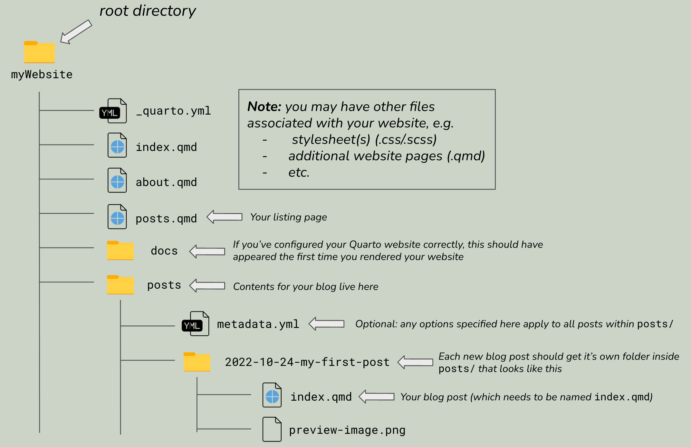

![]()

About a year ago (2021), I wrote my first ever blog post ~ about blogging ~ and tbh I’m a little embarrassed that this is only my third post here (does it count that I have ideas for blog posts squirreled away at least?? ). Regardless, you should trust me1 when I say that blogging is a great exercise for you to practice as regularly as you can – it can help you to:
- build your online profile / portfolio
“…sharing anything is almost always better than sharing nothing”
- practice your writing & communication skills
- stay atop data science trends
- solicit feedback from the community
- network
- learn something new and / or solidify your understanding
- combat imposter syndrome
“Once you’ve shared some analyses and code, you’ll probably find that you were underrating yourself in some areas.”
-also David Robinson in his post, Advice to aspiring data scientists: start a blog
Rather than repeat more content here, take a peek at my first post, which touches on more reasons why you should blog and provides some ideas on how to structure your blog posts. Before jumping into things, I’ll leave you with one last piece of advice from David Robinson:
When you’ve written the same code 3 times, write a function
When you’ve given the same in-person advice 3 times, write a blog post— David Robinson ((drob?)) November 9, 2017
I. Before we chat about blogs…
Our Master of Environmental Data Science (MEDS) students created the bones of their Quarto websites a couple months ago, and more recently took a little dive into website customization using Sass & CSS. For anyone who’s looking to get started on their website-building journey, feel free to explore the following resources:
Creating your personal website using Quarto
Customizing Quarto Websites: Make your website stand out using Sass & CSS
II. What’s the difference between a website and a blog?
If you’ve spent some time poking around the official Quarto documentation, you may have noticed instructions for creating either a Website or a Blog – but what’s the difference? Not much, aside from the initial structure:


A Quarto Blog is a type of Quarto Website – you can create websites that consist of just a single blog (like the above right-hand example), websites that have multiple blogs, or you can add a blog to a website that contains other content (which is what we’ll be doing today).
III. Adding a blog to your personal Quarto website
TL;DR: A couple of steps are required for setting up your blog, but generally speaking, you’ll need:
a folder (i.e. subdirectory) to hold all of your individual blog posts – I called my folder
posts/(though the name is up to you). I also (optionally) added a_metadata.ymlfile to this folder which includes some formatting and configuration options that will apply to all blog posts in this foldera listing page, which lists all of your blog posts for viewers to browse and click through – this is a
.qmdfile that you’ll add to your website’s navbar by including it in_quarto.ymlblog posts! Your listing page will be blank until you actually add your first blog post
Let’s create those together now.
NEW! Choose your own adventure instructions
I’ve spent a lot of July 2025 playing around with Posit’s newest IDE, Positron, and I’m really enjoying it! It’s been helpful for me to translate the location of RStudio’s GUI buttons to the Positron environment, so I’ve updated the instructions below to include guidance for working in Positron, alongside RStudio and the Terminal. Feel free to use whichever environment you prefer and follow the corresponding instructions as you go.
1. Create a posts/ folder
- Open up your Quarto website project and make sure you’re in your root directory. Here, we’ll create a new subdirectory, called
posts(though you can call this whatever you want), where all of our blog posts will eventually live.
- Click on the Create a new folder button in the Files pane:
- Type
posts, the click OK
- Click on the New Folder… button, which appears when you hover over your repository name in the Explorer menu:
- Type
posts, then click Enter / Return
- Make sure you’re in your root directory by typing,
pwd(you should see it return something like,file/path/to/your-repo) - If you’re not in your root directory, use the
cdcommand to move yourself there - Run
mkdir poststo create yourposts/folder
2. Optional: Add a _metadata.yml file to posts/
- While not required, a
_metadata.ymlfile can make your life easier if you want certain configurations to apply to all blog posts that you create.
- Click into the
posts/folder in the Files pane, then click Blank File > Text File > type_metadata.yml - Click OK
- Right click on your
posts/folder in the Explorer menu, then choose New File… - Type
_metadata.yml, then click Enter / Return
- Run
cd poststo move from your repository’s root directory into yourposts/directory - Run
touch _metadata.ymlto create your file
- Open your
_metadata.ymlfile to add options. I like these options2 for getting started, but it’s entirely up to you what you want to include (if anything at all):
_metadata.yml
##~~~~~~~~~~~~~~~~~~~~~~~~~~~~~~~~~~~~~~~~~~~~~~~~~~~~~~~~~~~~~~~~~~~~~~~~~~~~~~
## options specified here will apply to all posts in this folder ----
##~~~~~~~~~~~~~~~~~~~~~~~~~~~~~~~~~~~~~~~~~~~~~~~~~~~~~~~~~~~~~~~~~~~~~~~~~~~~~~
# re-render posts only when a change to the source file is made ----
freeze: auto
# enable banner style title blocks ----
title-block-banner: true- We’ll return to the
_metadata.ymlfile a little later on to see how adding more YAML options can help to streamline authoring blog posts.
3. Create a listing page
What is a listing page?
A listing page is a web page with content that is automatically generated from a list of documents – in this case, that would be a list of blog posts – and looks something like this (or check out my blog’s listing page):

default (shown above), grid, and table) for you to try out.- Your listing page takes the form of a
.qmdfile that lives in your repository’s root directory (I’ll be calling mineposts.qmdand giving it the title “My Blog” for demonstration purposes, though you can choose whatever file name and title you’d like). Note: There are lots of different ways to create a new.qmdfile. I outline just one approach for each environment, below:
Tip: Click on the R Project icon,  , in the Files pane to jump back to your project’s root directory
, in the Files pane to jump back to your project’s root directory
- From the menu bar, click File > New File > Quarto Document…
- When the dialog box opens, give it a Title (e.g. “My Blog”) – this is the name that will appear as the title of your listing page (you’ll be able to change this later by editing the YAML)
- Click Create (this will open the file in the Editor)
- Save (keyboard shortcut:
Cmd/Ctrl+S) your new file asposts.qmd
- Open the Command Palette using the keyboard shortcut,
Cmd/Ctrl+Shift+P - Search Quarto: New Document, then click Enter / Return (this will open your file in the Editor)
- Update the
titleYAML option with your preferred title (e.g. “My Blog”) - Save (keyboard shortcut:
Cmd/Ctrl+S) your new file to your repository’s root directory asposts.qmd(choose your root directory from the Where: dropdown menu if it’s not already selected by default)
- Make sure you’re in your root directory by typing,
pwd - If you’re not in your root directory, use the
cdcommand to move yourself there - Run
touch posts.qmdto create your file
At this point I highly recommend opening and editing your posts.qmd file using an IDE like RStudio or Positron. However, if you’re really excited to practice editing files from the Terminal, you can try out the following steps:
- Open
posts.qmdwith a Terminal-based text editor (e.g Nano, Vim; you may need to install your preferred text editor first, depending on your operating system) – I like nano, so I’ll runnano posts.qmdto openposts.qmdusing that editor. - Add the YAML gates and
titleoption with your preferred title (e.g. “My Blog”):
posts.qmd
---
title: "My Blog"
---Editing posts.qmd using nano in a Terminal window (as it appears on my Mac)
- Click
Ctrl+Xto exit, then typeYwhen it asks you if you’d like to save your work. Click Enter / Return to exit nano.
4. Configure your listing page
- Specify how you’d like your listing page to be arranged by updating the YAML section of
posts.qmd. There are a variety of options that you can specify. Below are just a few, so be sure to check out other options:
posts.qmd
---
title: "My Blog"
listing:
contents: posts # this name must match the name of the folder you created in step #1; here, all Quarto docs in the `posts` directory will be included on your listing page
type: grid # or `default` or `table`; each type has its own set of yaml options to include
sort: "date desc" # can also sort on more than one field
categories: true # allows you to sort posts by assigned categories
---6. Preview your website
- Make sure your listing page shows up by previewing your website. Run
quarto previewin your Terminal (this can be your RStudio or Positron Terminal, or in a separate Terminal window) to open up a live preview in a browser window. You should see something that looks like this (we haven’t created any posts yet, so it’ll be empty for now):

IV. Add a blog post to your blog
Now that you have your listing page set up, we can start populating it with blog posts. Repeat the following steps each time you want to add a new post.
1. Create a subdirectory inside your posts/ directory:
- To stay organized, I usually name mine
YYYY-MM-DD-short-post-description. This folder name will also become the slug for your published post.
2. Create an index.qmd file inside your new subdirectory
- Your file path should look something like this:
myWebsite/posts/2022-10-24-my-blog-post/index.qmd. This file is your blog post. Write all your content here!
Why name your blog post file,
index.qmd?
This is mostly important for maintaining short, clean URLs.
Let’s take this very blog post for example. The content that you’re reading right now is written to the file, samanthacsik.github.io/posts/2022-10-24-quarto-blogs/index.qmd (you can check it out on GitHub), and the resulting URL is https://samanthacsik.github.io/posts/2022-10-24-quarto-blogs/.
If I named my blog post file something like, my-blog-post.qmd (rather than index.qmd), the resulting URL would instead look like, https://samanthacsik.github.io/posts/2022-10-24-quarto-blogs/my-blog-post.html. This isn’t necessarily wrong or broken, but it does result in a lengthier URL – and short URLs tend to be easier to remember.
3. Configure your blog post
- You can add a variety of different options to the YAML section of
index.qmd. Here are my go-to options:
posts/2022-10-24-my-blog-post/index.qmd
---
1title: "blog post title"
description: "blog post description (appears underneath the title in smaller text) which is included on the listing page"
2author:
- name: Samantha Csik
url: https://samanthacsik.github.io/
orcid: 0000-0002-5300-3075
affiliation: Master of Environmental Data Science Program @ The Bren School (UCSB) & The National Center for Ecological Analysis & Synthesis
affiliation-url: https://ucsb-meds.github.io/
date: 10-24-2022
3categories: [Quarto, R, MEDS]
4citation:
url: https://samanthacsik.github.io/posts/2022-10-24-my-blog-post/
5image: preview-image.png
6draft: false
---
Here is where I will start writing my actual blog post content...- 1
- You should include a title, but don’t necessarily need a description (though I think these are nice to include!). These fields will appear on your listing page. You may also consider adding a subtitle.
- 2
- You can include more than one author – see this post and source code as an example.
- 3
- You may include as many self-defined categories as you’d like. Make sure that your spelling / capitalization / punctuation is consistent across blog posts should you apply the same categories to multiple posts.
- 4
- Adding the citation option automatically generates both a BibTeX citation and reference for your blog post, and adds them to the bottom of your post.
- 5
-
Include an image to add as a preview image, which will appear on your listing page alongside your post. Your image should live inside your post’s subdirectory (e.g.
mywebsite/posts/2022-10-24-my-blog-post/preview-image.png). - 6
-
Set
draft: truewhile you’re still working on your blog post to prevent it from showing up on your listing page, site map, or site search (it will still be available at a searchable URL). When you’re ready to publish, just removedraft: truefrom your YAML (or set tofalse), then render your post. Quarto v1.5.56 introduced draft banners, which will appear on any draft posts. You can also control how drafts are linked / rendered on your website using thedraft-modeoption. By default, any page set as a draft will not be linked or searchable. If you want your draft to still be searchable at it’s URL (helpful if you want to share a draft with someone, but don’t want it showing up on your listing page just yet), consider settingdraft-modeto eitherunlinkedorvisible– check out the documentation for more information.


draft is set to false.4. Consider moving YAML options to _metadata.yml, as appropriate
- For example, do you want your own author / affiliation information applied to each blog post you write, by default? Add it instead to
_metadata.ymland save yourself re-typing it each time you create a new post! Here, I modify my_metadata.ymlandposts/2022-10-24-my-blog-post/index.qmdfiles:
_metadata.yml
##~~~~~~~~~~~~~~~~~~~~~~~~~~~~~~~~~~~~~~~~~~~~~~~~~~~~~~~~~~~~~~~~~~~~~~~~~~~~~~
## options specified here will apply to all posts in this folder ----
##~~~~~~~~~~~~~~~~~~~~~~~~~~~~~~~~~~~~~~~~~~~~~~~~~~~~~~~~~~~~~~~~~~~~~~~~~~~~~~
# re-render posts only when a change to the source file is made ----
freeze: auto
# enable banner style title blocks ----
title-block-banner: true
# my author info ----
author:
- name: Samantha Shanny-Csik
url: https://samanthacsik.github.io/
orcid: 0000-0002-5300-3075
affiliation: Master of Environmental Data Science Program @ The Bren School (UCSB)
affiliation-url: https://ucsb-meds.github.io/ posts/2022-10-24-my-blog-post/index.qmd
---
title: "blog post title"
description: "blog post description (appears underneath the title in smaller text) which is included on the listing page"
# I no longer need to include my authorship information here -- it'll automatically be applied from _metadata.yml!
date: 10-24-2022
categories: [Quarto, R, MEDS]
citation:
url: https://samanthacsik.github.io/posts/2022-10-24-my-blog-post/
image: preview-image.png
draft: false
---
Here is where I will start writng my actual blog post content...- Are you collaborating on a blog post with additional authors? You can override the defaults set in
_metadata.ymlby specifying theauthoroption directly in any particular blog post file’s YAML.
V. Troubleshooting
If things aren’t working as expected, double check your repository structure – it should be organized similar to this:

VI. Some additional authoring features to explore
Blog posts are just Quarto documents, meaning you can combine prose, code, and embedded outputs all in one place, just like you would in any other .qmd file (which makes your blog the perfect place to create data science / programming tutorials both for yourself and others ). If you’re looking for additional ways to enhance your posts, read on below:
Adding footnotes
There are multiple ways to include footnotes throughout your blog posts:
- Use the
[^#]syntax to denote where you would like a note to be inserted. Write your note somewhere below following the[^#]: your note heresyntax. For example:
I am going to insert a footnote here[^1].
[^1]: Here is the associated footnote, which will appear at the bottom of my document in a "Footnotes" section.- Alternatively, you can write your notes inline to avoid having to use identifiers (e.g.
[^#]). For example:
I am going to insert an inline footnote here^[Here is my inline footnote].- You can also add footnotes that include multiple paragraphs. See the source code for this blog post and take a peek at footnote #2 for an example on how to do so (or check out the Quarto documentation).
All footnotes will appear in a “Footnotes” section that is automatically generated for you.
Creating a bibliography and adding citations
Quarto supports the use of bibliography files for citing works throughout your blog post. There are a number of ways to do this, but so far, I’ve found creating a BibLaTex database to be relatively straightforward. This database takes the form of a plain-text .bib file where we can store all of our bibliographic information. That information needs to be encoded in a particular way (more on that below). Follow these steps to cite works in your blog posts:
- First, create a
.bibfile in the folder containing your blog post. I called minereferences.bib, but the name is up to you.
- Ensure that you’re in your blog post directory (e.g.
myWebsite/posts/YYYY-MM-DD-my-blog-post/) in the Files pane - Click on the new File button, then select the Text File option (this allows you to define any file type)
- Type
references.bibin the name field, then press OK
- From the Explorer menu, click on your blog post directory (e.g.
myWebsite/posts/YYYY-MM-DD-my-blog-post/) to highlight it - Click the New File… button (which appears when you hover your mouse over your repository name), type the name,
references.bib, then click Enter / Return
- Ensure that you’re in your blog post directory (e.g.
myWebsite/posts/YYYY-MM-DD-my-blog-post/) usingpwdandcdto navigate there, as necessary - Run
touch references.bibto create your file
- Add the
bibliographyoption to your blog post’s YAML and provide it the name of your.bibfile:
myWebsite/posts/YYYY-MM-DD-my-blog-post/index.qmd
---
title: "blog post title"
# ~ additional YAML options omitted for brevity ~
bibliography: references.bib
---- Next, we’ll want to add some references. These take a particular format that generally looks like this (the number / types of fields included may vary):
references.bib
@type{key,
author = {LastName, FirstName},
title = {Title of work},
date = {YYYY}
url = {https://url.com},
langid = {en}
}where type can be manual, book, article, misc, etc. (all case-insensitive) and key is the citation identifier used for inserting in-text citations (we’ll get there soon).
- There may be instances where you want to cite a resource that already has a BibTex citation available for you to copy over to your
references.bibfile (e.g. this blog post has one available at the bottom). For most resources, however, you’ll need to construct your own. You can do this manually, or with the help of a BibTeX reference generator (Googling will yield plenty of options, but zoterobib is a great place to start. Note that you may have to make some manual adjustments). Check out myreferences.bibfile for this post as an example.
- Now that you have BibTex references in your
.bibfile, you can start adding in-text citations. These generally take the form[@key](but read more about Quarto citation syntax). When you add an in-text citation, Quarto will automatically add the reference to the bottom of your blog post under the “References” section.
- To give a concrete example, let’s say I want to cite my first (ever) blog post from 2021. I can copy the BibTeX citation from the bottom of the post and paste it into my
references.bibfile:
@online{csik2021,
author = {Samantha Csik},
title = {Why Create Presentation Slides about Blogging When You Can
Just Blog about It Instead?},
date = {2021-09-24},
url = {https://samanthacsik.github.io/posts/2021-09-21-distill-blogs/},
langid = {en}
}- I can now add an in-text citation using the
[@csik2021]syntax, which will render it like this (Csik 2021). Once cited, the full reference will appear in my References section at the bottom of this post.
- Optionally, you can update your preferred citation style (the default is set to Chicago Manual of Style). Search for and download your preferred citation style (in the form of a
.csl(Citation Style Language) file) from either CSL Project or Zotereo’s style repository, and add it to your blog post’s folder. Update your blog post’s YAML using thecsloption to apply the new styling. For example, I can apply PLOS Computational Biology styling:
---
title: "blog post title"
# ~ additional YAML options omitted for brevity ~
csl: plos-computational-biology.csl
---That wasn’t so bad, right?? What if I told you there was an even easier way to add citations….
Start by popping over to Visual editor in either RStudio or Positron (yes, this works in both IDEs!). Locate the Source and Visual editor buttons at the top left corner of your blog post file (
index.qmd). Click on Visual editor button (if you’re working in Positron, there are actually a number of different ways to switch to the Visual editor). Once in Visual editor mode, you should see a tool bar appear at the top of your file.Place your cursor where you’d like to insert a citation, then from the Insert drop down menu (see tool bar), select Citation.
A new window will pop open with a number of different options for inserting citations. If you’ve already created a
references.bibfile, it will appear under the My Sources and Bibliography sections. You can choose to insert citations using any of your existing references, or choose another option, like inserting a citation based on a DOI. Give it a try using this DOI from Gaynor et al. 2022 – you’ll notice that when an in-text citation is added using a DOI, yourreferences.bibfile will automatically be updated with the BibTeX reference. If you don’t yet have a.bibfile, one will be automatically generated for you. LIKE SERIOUSLY?? Where was this when I was in grad school?? SO FREAKIN COOL.

Okay, back to being chill…
Article layout
Quarto also supports a number of different page layout options to further customize the appearance of your posts (or any page on your website, for that matter).
VII. A note on adding an additional blog (or more) to your site
You aren’t limited to just one blog / listing page! Repeat Part III to add a second listing page plus content to your website. My personal website contains four listing pages – one called posts (aka my actual blog), one called talks & workshops, once called courses, and one called projects. Explore the GitHub repo to take a peek at the file structure and source code.
VIII. Blogs to follow (+ one post from each that I’ve particularly enjoyed)
There are tons of awesome data science bloggers out there – here are just a few that I’ve enjoyed, but get out there and start exploring others for yourself!
Also note: I’ve included one blog post from each creator and added citations (with the year only format). Check out the source code for this post to see how it’s done.
- Albert Rapp, and his post Comparing pipes: Base-R
|>vs{magrittr}%>%(2025) - Rebecca Barter, and her post An introduction to Python for R Users (2023)
- Maya Gans, and her post My first live coding interview (2019)
- Jadey Ryan, and her post Notes from live code review of
{soils}(2024) - Nicola Rennie, and her post Creating typewriter-styled maps in
{ggplot2}(2023) - Danielle Navarro, and her post Using Amazon S3 with R (2022)
- Shannon Pileggi, and her post, Curating for
@WeAreRLadieson Twitter (2021)
IX. Additional Resources
The ultimate guide to starting a Quarto blog, by Albert Rapp is incredibly thorough and explores even more ways to customize your blog. Check it out!
Creating a blog with Quarto in 10 steps, by Beatriz Milz walks through the steps of setting up a new Quarto Blog project. She also details how to set up giscus to enable comments on your blog posts.
References
Bartner, Rebecca. 2023. “An Introduction to Python for r Users.” September 12, 2023. https://rebeccabarter.com/blog/2023-09-11-from_r_to_python.
Csik, Samantha. 2021. “Why Create Presentation Slides about Blogging When You Can Just Blog about It Instead?” September 24, 2021. https://samanthacsik.github.io/posts/2021-09-21-distill-blogs/.
Gans, Maya. 2019. “My First Live Coding Interview.” August 27, 2019. https://maya.rbind.io/posts/live-coding-interview/.
Pileggi, Shannon. 2021. “Curating for @WeAreRLadies on Twitter.” https://www.pipinghotdata.com/posts/2021-09-23-curating-for-wearerladies-on-twitter/.
Rapp, Albert. 2025. “Comparing Pipes: Base-R |> Vs Magrittr.” January 12, 2025. https://albert-rapp.de/posts/31_pipes_compared/31_pipes_compared.
Rennie, Nicola. 2023. “Creating Typewriter-Styled Maps in ggplot2.” September 30, 2023. https://nrennie.rbind.io/blog/creating-typewriter-maps-r/.
Ryan, Jadey. 2024. “Notes from Live Code Review of {Soils}.” January 22, 2024. https://jadeyryan.com/blog/2024-01-22_package-review.
Footnotes
Okay, you don’t just have to trust me. Lots of data scientists advocate for blogging as an important skill and communication tool. Check out this blog post by David Robinson to start.↩︎
The
freezeoption: Setting this option toautowill only re-render posts when you make updates to the source files (as opposed to re-rendering them each time you Render Website – this can save time, particularly if you have computationally-heavy content in your blog posts). If you set this option totrue, posts will never be re-rendered (even if you’ve made changes to the source files). If you use this option, you’ll need to Render individual posts whenever you make changes to their source files before you Render Website, otherwise your updates will not appear. Check out the Quarto documentation and this great short blog post for more information onfreeze.The
title-block-banneroption: Setting this option totruewill enable a banner style title block (where the title, subtitle, description, and categories are all positioned inside the banner) for all posts.↩︎
Citation
BibTeX citation:
@online{shanny-csik2022,
author = {Shanny-Csik, Samantha},
title = {Adding a Blog to Your Existing {Quarto} Website},
date = {2022-10-24},
url = {https://samanthacsik.github.io/posts/2022-10-24-quarto-blogs/},
langid = {en}
}
For attribution, please cite this work as:
Shanny-Csik, Samantha. 2022. “Adding a Blog to Your Existing
Quarto Website.” October 24, 2022. https://samanthacsik.github.io/posts/2022-10-24-quarto-blogs/.